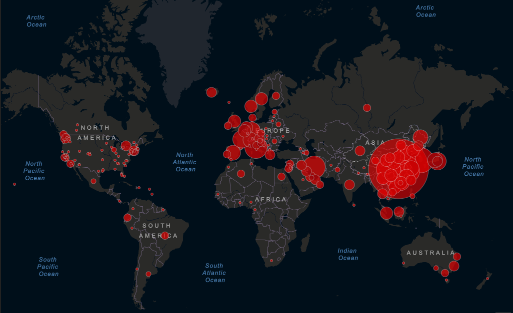
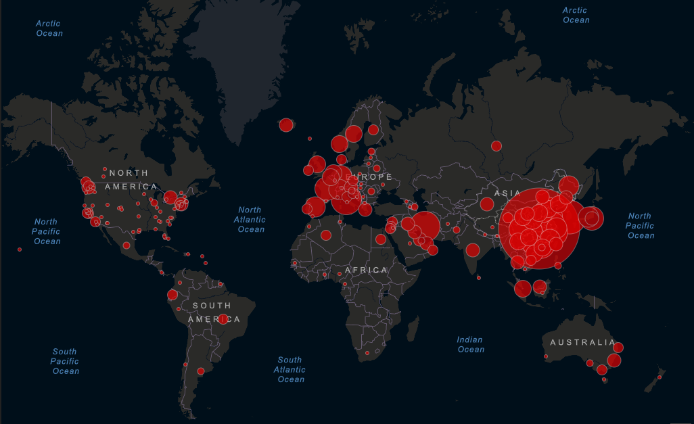

Koronavirus
Co je koronavirus?
Navzdory podobnostem s jinými koronaviry se z genetického hlediska jedná o dosud
neznámý virus. V této chvíli
je již jasné, že úmrtnost v případě nakažení tímto virem je
výrazně nižší než v případě zmíněné nemoci SARS.
Na koronavirus však zatím stále
neexistuje vakcína, a pokud by se ji podařilo v rychlosti vyvinout, i tak
bude potřeba
řada měsíců na testování.
Jak se proti němu bránit?
V souvislosti s aktuálním výskytem koronaviru Ministerstvo zdravotnictví ČR
[MZ ČR] vydalo několik
pokynů,
jak se proti
koronaviru bránit. Pozor, mezi ohrožené skupiny
patří zejména senioři, dětské skupiny,
chronicky
nemocní či osoby s oslabenou imunitou. Podle
MZ ČR je důležité postupovat tak, jako v
chřipkovém období.
- Vyhýbat se těm, kdo jsou zjevně nemocní.
- Dodržovat základní hygienická pravidla.
- Používat například i dezinfekci, pokud
jsme v kontaktu s lidmi, kteří akutními
respiračními potížemi trpí. - Nezdržovat se v místech s vyšším počtem lidí.
- Jedinci, kteří trpí respiračním onemocněním by
měli dodržovat pravidla respirační hygieny – tj.
při kýchání a kašlání řádně užívat, nejlépe jednorázové,
kapesníky, při kašlání a kýchání si zakrývat ústa paží/rukávem,
nikoliv rukou! Kapénky se pak mohou jednoduše přenést dál! - Samozřejmě i zdravotníci sami by se měli chránit, jelikož jsou to
právě oni, kteří přicházejí s pacienty nejvíce do styku.
Příznaky onemocnění lze snadno zaměnit za běžnou chřipku. Jsou to:
- Teplota
- Kašel
- Zhoršené dýchaní
- Později i průjem
 

Hygienická stanice KV : http://www.khskv.cz
Hygienická stanice Praha: http://www.hygpraha.cz/